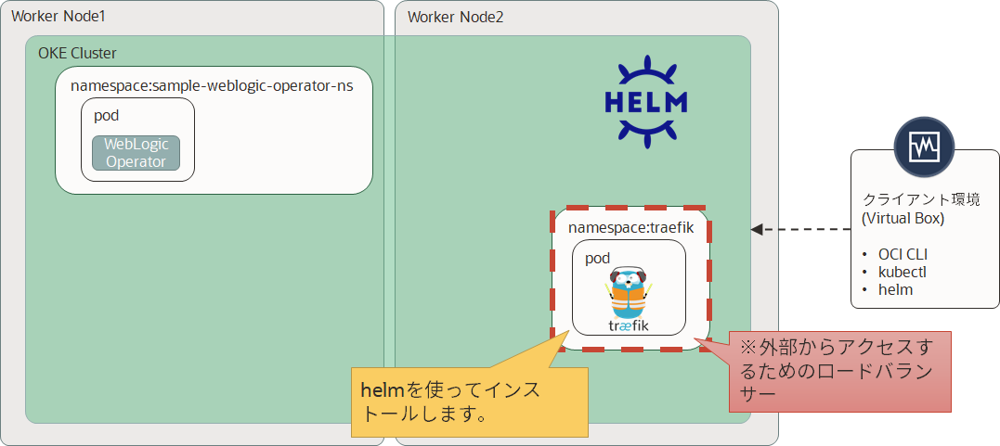

Oracle WebLogic Operator チュートリアル¶
Traefik Software Loadbalancerのインストール¶
WebLogic Server Kubernetes Operatorは、Traefik、VoyagerそしてApacheの3つのロードバランサをサポートしています。 サンプルはdocumentationで提供されています。
このチュートリアルでは、WebLogicクラスタのロードバランシングを行うためにTraefik ingress controllerをインストールする方法を示します。

Helm chartを用いたTraefik operatorのインストール¶
WebLogic OperatorのローカルGitレポジトリが存在するディレクトリに移動します。
cd /u01/content/weblogic-kubernetes-operator/
traefikネームスペースにTraefik operatorをインストールするために以下のコマンドを実行します：
helm install stable/traefik \
--name traefik-operator \
--namespace traefik \
--values kubernetes/samples/charts/traefik/values.yaml \
--set "kubernetes.namespaces={traefik}" \
--set "serviceType=LoadBalancer"
以下のような出力が得られます：
NAME: traefik-operator
LAST DEPLOYED: Wed Feb 12 09:08:33 2020
NAMESPACE: traefik
STATUS: DEPLOYED
RESOURCES:
==> v1/ConfigMap
NAME AGE
traefik-operator 0s
==> v1/Deployment
NAME AGE
traefik-operator 0s
==> v1/Pod(related)
NAME AGE
traefik-operator-7ffcd4bcd7-tt7xr 0s
==> v1/Role
NAME AGE
traefik-operator 0s
==> v1/RoleBinding
NAME AGE
traefik-operator 0s
==> v1/Secret
NAME AGE
traefik-operator-default-cert 0s
==> v1/Service
NAME AGE
traefik-operator 0s
traefik-operator-dashboard 0s
==> v1/ServiceAccount
NAME AGE
traefik-operator 0s
==> v1beta1/Ingress
NAME AGE
traefik-operator-dashboard 0s
NOTES:
1. Get Traefik's load balancer IP/hostname:
NOTE: It may take a few minutes for this to become available.
You can watch the status by running:
$ kubectl get svc traefik-operator --namespace traefik -w
Once 'EXTERNAL-IP' is no longer '<pending>':
$ kubectl describe svc traefik-operator --namespace traefik | grep Ingress | awk '{print $3}'
2. Configure DNS records corresponding to Kubernetes ingress resources to point to the load balancer IP/hostname found in step 1
以上で、Traefikのインストールは完了です。Traefik (Loadbalancer) サービスを確認しましょう：
kubectl get service -n traefik
以下のような出力が得られます：
NAME TYPE CLUSTER-IP EXTERNAL-IP PORT(S) AGE
traefik-operator LoadBalancer 10.96.120.35 xxx.xxx.xxx.xxx 443:31774/TCP,80:31447/TCP 3m52s
traefik-operator-dashboard ClusterIP 10.96.53.103 <none> 80/TCP 3m52s
パブリックIPアドレスだけを確認したい場合は、以下のコマンドを実行します：
kubectl describe svc traefik-operator --namespace traefik | grep Ingress | awk '{print $3}'
xxx.xxx.xxx.xxxのようなEXTERNAL_IP_ADDRESSを得られます：
xxx.xxx.xxx.xxx
Helm Chartsを確認しましょう：
helm list
以下のような結果を得られます：
NAME REVISION UPDATED STATUS CHART APP VERSION NAMESPACE
sample-weblogic-operator 1 Wed Feb 12 09:04:31 2020 DEPLOYED weblogic-operator-2.4.0 sample-weblogic-operator-ns
traefik-operator 1 Wed Feb 12 09:08:33 2020 DEPLOYED traefik-1.86.1 1.7.20 traefik
curlを使って、Traefik's dashboardを確認することもできます。上記で確認したパブリックIPアドレス(EXTERNAL_IP_ADDRESS)を使います：
curl -H 'host: traefik.example.com' http://EXTERNAL_IP_ADDRESS
以下のように表示されます：
<a href="/dashboard/">Found</a>.
続いて、WebLogic Domainのデプロイに進んでください。